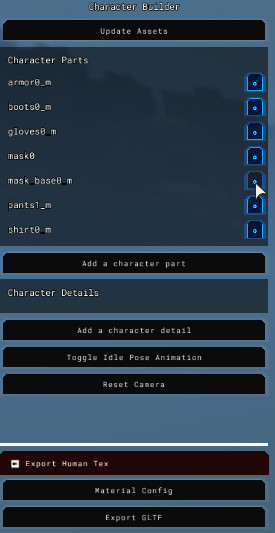
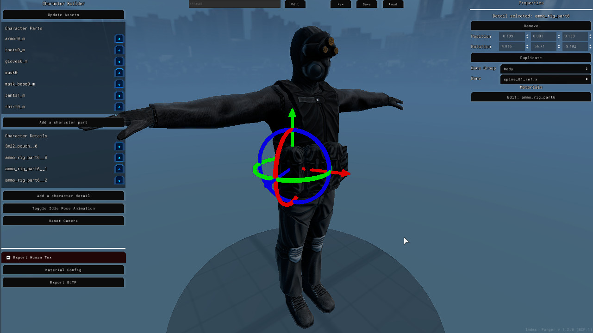

Module: character_builder
Documentation last edited: October 22, 2025 at 8:00 UTC
Description

What's the purpose?
Character Builder provides a solid workflow to make characters of any complexity. In fact, it works like constructor of humanoid characters. If you ever played GTA, you probably were using their dressing system at least once to change apperance of your character. In this case, Character Builder is quite similar. However, in this case, it is usable for making of character models, that later can be used for NPCs or comic scenes. In this case...
- Character Builder is providing "character parts" to add parts that have influence of multiple bones. These can be rather complex clothes or equipment.
- "Character details" are objects that are attached to a bone (100% bone weight influence on all vertices), in this case, it can be ammo rig pouches, radios, goggles, minor reusable details.
- Solid preview of a moving character to show how vertex weights are working.
- Possibility to save and return later.
- All assets can be loaded in real-time, you don't have to wait for Godot to import models or textures.
- Subtextures support and material editing for even more visual control.
- Export of GLTFs with minimal amount of materials by creation of combined, optimized texture atlas.
- Due to more modular workflow, work can be split between multiple artists working on different parts/details.
- And probably a bit more.
How was it made before? What was the reason to create the Character Builder?

The workflow was like that:
- Create a high-poly model of clothes to combine in one mesh afterwards.
- Making a quick, dirty low-poly with Instant Meshes.
- UV unwrapping, baking, texturing, quick rigging, tada.
...
In 8 hours i could make one character! Or, not really 8 hours, sometimes more if you had to make quadruple NVGs for example. This workflow was *blazingly fast*, really. However, it was suffering from issues that were rather offputting for me as a developer:
- Each character would require at least 8 hours of work, of course, it could be less... but it would come at cost.
- There's no possibility to reuse *any* parts of already existing characters.
- Higher level of detail usually meant going through several circles of hell. Would you like to take a hellish ride?
- Hard surface modelling (forementioned NVGs) is rather complex.
- It is nearly impossible to go back and change *one little thing* in a model.
- And so on, if you have certain experience in modelling, you might mention *even more* of these points.
Purpose

So that being said, Character Builder is
the must
when it comes to creation of any characters in this game from now on. Even if alternative ways are still available, it is
highly advised
to use this tool instead. It saves a lot of pain when it comes to arrangement of clothes, reusing of parts, and, surely, the most important point here is that it optimizes both worktime and runtime performance of resulting characters.
To use this tool, simply change to location called
character_builder
, simple as that. Keep in mind: This location
WILL NOT work at exported game
since it is relying on GLTF exporting tools that are
only available in editor builds.
Technical side
Firstly, you need to know that the entire editor is practically made in a single scene:
res://modules/character_builder/assets/editor_scenes/character_builder.tscn
. Of course, it is using a set of subscenes for more complex parts like camera controller, character, UI and gizmos.
Scene Structure
world_env
and
env
- these two simply setup an environment to see in the background
cam_rotation
- camera controller, simple controls assigned to Right Mouse Button
character
- the character themselves, represents a complex model with all character meshes of parts/details on it, it also contains the exporting logic in the code of this node
ui_layer/editor_UI
- this editor's entire UI, a pretty complex subscene with all kinds of
Control
-derived nodes
position
and
rotation
- gizmos used by the system to move the objects around (mainly used for details)
screenshot_viewport
- just a viewport that makes screenshots for character save files
File Structure

res://modules/character_builder/assets/char_base/
- contains a humanoid character placeholder
res://modules/character_builder/assets/editor_scenes/
- a set of folders related to the main editor scene (including the scene itself)
res://modules/character_builder/assets/editor_scenes/character/
- scenes related to the character model, in this case, the character scene as well as the material exporting scene
res://modules/character_builder/assets/editor_scenes/editor/
- generic editor stuff like camera controller, this folder contains
camera.tscn
that works like first-person noclip view, however it was made in the first version of this tool and was removed due to uncomfortable use in this scenario
res://modules/character_builder/assets/editor_scenes/editor_UI/
- contains the editor UI scene as well as folder that contains variety of complex UI elements used by this editor UI, this folder also contains a theme resource file
res://modules/character_builder/assets/editor_scenes/editor_UI/parts/
- complex editor UI parts, which are related to variety of lists, selectors and, the most important part - material combiner window
res://modules/character_builder/assets/textures/
- some textures, used mainly by UI
This module also contains
hidden folders
that will be covered in different section of this documentation.
Code structure and principles
Unlike some other similar modules like
comics_renderer
, this module is trying to utilize principle "call down, signal up" as much as possible to avoid mess in the code. Sadly it results in an insane amount of boilerplate code, but overall, organization is more or less clear. Even if i wish to tell about every script in detail, they have their very own documentation pages. Here i would like to point out the ones that are quite essential for this module, so it would be easier for you to start orienting yourself here.
res://modules/character_builder/src/character_builder.gd
- this is the primary script in this system, it works like a duct tape for character model and UI. It is connecting to all signals of these two and makes them communicate with each other though signal calls. If character model have changed the list of parts, editor UI will be updated accordingly. If material combiner menu have got some changes, character will get information about that from this primary script that'll get that info from a signal. Call down, signal up, that's the purpose of this entire script. Surely, it went beyond that when it comes to the following points:
- Input management
- UI / Camera Controller synchronization (do not accept inputs if cursor in UI)
- Object selection logic (mainly used for "character details")
- Saving/Loading logic handling
All of this logic helps to make this tool usable for the end-user; Makes them happy, you know, satisfied with this life, extra dopamine in their mind, makes them forget all the trouble they have experienced in this life, you know what i mean.
res://modules/character_builder/src/editor_UI/editor_UI.gd
- this is the editor UI's code and, yeah, there's not much to see here, it is basically a fully-fledged "call down, signal up" script that connects all the pieces together while providing a list of signals usable by the
character_builder.gd
res://modules/character_builder/src/character/character.gd
- in a way, some kind of heart in this entire system. This is the code that works with the character model, which is about:
- Organizing/Processing character parts and details
- Exporting into GLTF with combined texture sets
- Working with saving/loading
Even though this script works with exporting, keep in mind: Material combiner window is the thing that makes exporting possible, only with proper configuration
character.gd
can function as exporter.
res://modules/character_builder/src/character/material_export.gd
- all texture sets are rendered in a separate
Viewport
to be combined later in
character.gd
. This one is important because materials might have different configurations and
material_export.gd
is forcing all materials to be saved in a PBR set that consists of "Diffuse", "Normal" and "MRS" maps. Keep in mind, all "texture set combining" logic is placed in
character.gd
, not here.
res://modules/character_builder/src/editor_UI/parts/material_combiner.gd
- code for the material combining UI. This one is important to mention, because that's the source of all info regarding the texture sets combination; It is exporting data that is later used
character.gd
res://modules/character_builder/src/autoload/character_builder_utilities.gd
- an auto-load that is also known
CharacterBuilderUtilities
, this singleton exists to cover the essential needs of model processing in this module that is required by character parts/details as well as certain UI elements
For more details regarding other scripts in this module, please, read documentation of these scripts or take a look at their source code.
Hidden Folders
res://modules/character_builder/assets/
contains a set of hidden folders. Godot ignores all folders that are starting with a point, like
.game_export
in particular. In this case, Godot won't import any of the files in there and they won't be visible in
FileSystem
. Besides ignoring the importing step of this engine, there's one more reason of choosing such a design decision: This project contains a lot of files that are slowing down the work of
FileSystem
, resulting in much slower detection of importable files, slower saving times and etc. More than that, this system is relying on runtime loading of resources by using
CharacterBuilderUtilities.load_image_texture
and
PackedSceneGLTF.import_gltf_scene
as a way to skip the torturing part of importing Godot assets. It also allows to not close the application if you have imported a new part, you can simply reload the assets and it'll allow you to keep working on your character.
List of hidden folders:
.char_detail_sources
- contains source files related to character details, which includes Blender files as well as baked maps
.char_details
- exported files of all character details that are loaded by the system to operate with
.char_parts
- exported files of all character parts
.char_parts_sources
- source files of character parts (like
.char_detail_sources
)
.GLTF_exports
- all exported characters, they always end up here on export, even if you disable exporting to
human_model
module
.saved_characters
- save files of all characters
Potential usecase of these hidden folders is covered in section
How can you import your own assets? / Hidden Folders Organization
of this documentation page. Scroll down, you'll find it there.
How to use?
Start
To start using Character Builder, you can switch to location called
character_builder
by entering a console command:
change_location character_builder
. Or, alternatively, you can simply use dev-menu. Either way, once you switch to this location, you will see a default setup.
Name change
Once you start working on a new character, you mind need to consider to change the name of your character. You can do that by pressing "Edit" button on the top panel and entering a name of your character. After you press "Apply", this will change the name of your character.

Saving
By pressing save, you will save a character with this name. If there are existing save files with the same name - they will be automatically overriden, so be cautious.
Loading
You can also load all existing characters by pressing "Load" button, in menu you will be able to see the names of the existing characters as well as their previews for easier understanding of what kind of character it is.

Character Parts
When you make a new character, you might need to consider to add your first character part. You can do that by pressing "Add a character part" button on the left.
After pressing this button, you will see a menu of all available character parts. You can add any character parts without any limitations if it fits your artistic view. Once you add a character part, the selection window will NOT close allowing you to add multiple parts.
If you want to edit properties of your new part, you can press
[o]
button in the parts list on the left.

This will give you access to transform parameters as well as to material editing. By pressing on material edit button, you will see the list of properties in the "Material Editor" window, where you can switch textures of your part or tweak the material parameters according to your taste or needs. If you don't need this part anymore, you can simply press "Remove" in the property window.

Character Details
If you are done working with character parts of any sorts, you might wish to work with the details of this character. You can do that by adding them with "Add a character detail" button. Process is *very* similar to character parts, except there's one sufficient difference that makes character details a unique tool in the hands of artist. Unlike character parts, you can select details by simply clicking on them in Character Builder viewport. This will give you possibility to use gizmos to position and rotate these details. This way, you can add ammo pouches to your ammo rig. Keep in mind, details are attached to a specific bone (unlike parts that have multiple influences). When you select a detail, you can specify a bone group and, as it follows: A bone to attach this detail to. You can use "Toggle Idle Pose Animation" button to play a test animation to find out how your details are moving with the character.

Exporting
Once you are done with creation of your character, you might want to export this character to import into this game as a "Human Model". However, you need to understand that this process consists of several steps. The most important ones are "Material Combining Configuration" and "BlenderFastTools Integration"
Exporting - Material Combining Configuration
If you will try to export the character model straight away without configuration, you will get an error that says:
Export error: Please, configure material combining without errors.

In this case, you need to press a button called "Material Config", it is located on the left.

Once you press this button, you will see a highly-specialized nanotechnology non-AI fucking masterpiece window to place down simple quad shapes to turn them into a single combined bombastic optimized high-quality texture set.
Oh yeah, i was so bored to write this thing at this point that i couldn't refuse to add some marketing buzzwords that would keep you engaged... Anyway, what i was saying is that you will open this window, it will contain a list of materials on the left.

All of these materials have a checkbox, once you press a checkbox - this material will appear in the texture field.

Even if you can place down one texture on top of another, keep in mind - UVs will be placed accordingly. So you should place them down to their unique spots without any overlaps. If you will have any overlaps, you will see a warning on the left. Overlaps won't stop you from exporting a model.

You can tweak the size of individual material on the left by changing "x1.0" value to something else.

And, if you are done with placement of your materials, you can also change "Tex. Size Limit" to change the size of the resulting texture in case if the default value can be too low for your needs. You can set the size limit to a maximum value and the system will use only the needed texture resolution instead.
Once you are done with everything, you can press "Export GLTF" and it will export your model. Be aware that "Export Human Tex" checkbox exports your textures to a human model's folder that is placed at
"res://modules/human_model/assets/models/
[CHARACTER_NAME_HERE]
"
.

Exporting - BlenderFastTools Integration
Open a version of Blender that has a full support of the "BlenderFastTools" plugin. At this moment, 2.83 or 4.x are the only compatible version. Go to "Scene Properties" window, scroll down to the bottom of "BlenderFastTools" section.

You will see a category called "Import Character" that have a lot of warnings written in an extremely radical polite English.

Press "Update character list" button and then select a character you want to import in "Character Builder import" panel.
After pressing "Import Character", you will import the character made in Character Builder.
Imported character are split into parts and details. You can either connect everything together by pressing "A" and then "Ctrl + J", or you can tweak certain parts in edit mode to make them fit better.

After connecting everything together, you need to rename the only mesh object to "character".

After this, you will get access to "Human Model" category (it is higher up there in the section) where you can find a button called "Export character".
Before you press this button, make sure you have saved your .blend file with an appropriate name of the character you want to export. It is highly advised to store all human character models at
"res://.dev_sources/human_models/"
. Once you've saved your file, you can press "Export character" model, that will automatically export appropriate GLTF file into
"res://modules/human_model/assets/models/
[CHARACTER_NAME_HERE]
"
.

Final Configuration
Make sure to visit this folder in Godot to import the models and configure the materials by assigning them correct values and textures in all slots.
By default, Godot is importing
SpatialMaterial
materials instead of
UserSpatialUbershader
that are used for all materials in this game. Firstly - you need to replace
SpatialMaterial
with
UserSpatialUbershader
. You can just remove the file, create a new resource (with the same name, mind you) and then it's gonna be great. However, it might be too slow, so i would like to show some easier method. Firstly, copy the folder path...
Then, open
OtherKit
menu...

Click here a couple of times...

Find "Material Replace" tab, enter the folder path, click "Replace"

While it might seem to be harder to do than doing it the plain-old way, i found it to be faster personally because "Create a new resource" window is working slowly in this project, plus i'm too lazy to save the resource properly, while this tool helps to detect any
SpatialMaterial
and replace them accordingly. However, back to configuration. When you get your hands on a new
UserSpatialUbershader
, you need to enable effects... Also, make sure to change
Diffuse Mode
to
"Burley"
and
Specular Mode
to
"Schlick GGX"
...

For the most characters you will need
Albedo
,
Normal Map
,
MRS
effects. Sometimes -
Emission
. All of these effects would be more than sufficient to make somewhat decent characters of any complexity. After you are done enabling effects, press
Force Update
to update shader in this material to fit the requirements of renderer.

After you've updated the material, you can assign textures to slots. Keep in mind - initially your material will be fully black, so do not forget to change
Albedo Color
to be white. More than that,
Normal Map Power
equals to
0.0
by default, make sure to change value to
1.0
so normal map would take full effect on lighting of this material. After all this - mr. Shitass0 should be looking fresh and clean.
Using your fancy new character on NPC
Alright, it is going a little bit offtopic here, since it goes out of scope of this module in its entirety... But let's be honest, you'd be more than happy to see your fancy new character on certain NPC in this game, right? So let's do this.
"res://modules/non_playable_character/assets/characters/"
contains all NPC character configs of this game, so you can locate a class of your choice. Let's edit
agent
...
And then you just edit a model name over here, in this array...
How can you import your own assets? / Hidden Folders Organization
Once you got yourself on your feet and made a character of your dreams, you, most likely, will wonder how to add custom assets in this tool. It is pretty easy, however you need to be aware of the rules in this system. Firstly, you may learn faster if you examine already existing source files placed in folders
"modules/character_builder/assets/.char_parts_sources/"
and
"modules/character_builder/assets/.char_detail_sources/"
, as well as already exported
"modules/character_builder/assets/.char_parts/"
and
"modules/character_builder/assets/.char_details/"
. By examining these files, you have a good chance to see patterns all over the place and go through some kind of trip. Either way, i'm writing this guide so... I guess i would still need to explain it briefly.

Character Parts Geometry
To make a proper piece of geometry for your character part, you need to get a proper "armature" in Blender first.
"human_rig"
is a skeleton that is used by all human models and character parts. You can't create one yourself, you need to get it from somewhere else. You can easily get a skeleton by pressing "Import Human Armature" or by importing a character you'd wish to develop.
Once you got the armature (preferrably with some kind of humanoid character geometry), you can create your character part. It's usually as easy as creating a geometry on top of the human base mesh. I would surely describe you a detailed guide on how to make models here, but i would rather assume you've got years of experience behind your back and you know how to make that stuff yourself.
Once you are done with your model, make sure to name your mesh object
"char_part"
, this way BlenderFastTools will detect it as exportable character part mesh. Before exporting, please, make sure you've got proper vertex weights (mesh is parented to armature and is deformed by it) and that the material's name is something you'd be able to operate with (and is unique enough to not cause any conflicts with other parts/details). It is highly recommended to call your materials just like you call your character part. If you make "armor0_m", then call your material "armor0_m", if there's multiple materials - just add a number in the end.
After checking everything: Press
"Export character part"
in "Character Builder" panel. This will export GLTF of your character part.
However, you need to prepare textures. All of the exported textures must follow the following pattern:
"
[matname]
_D.tga" # Diffuse / Color map
"
[matname]
_N.tga" # Normal map
"
[matname]
_MRS.tga" # Metal-Roughness-Specular packed map
"
[matname]
_E.tga" # Emission map
Keep your names consistent, if your material is called "armor0_m", then your image file name is going to be
"armor0_m_D.tga"
. You save your textures in the folder of exported character part. To locate your exported character part, go to
"modules/character_builder/assets/.char_parts/"
and find a folder with the name of your character part. Once you export all the textures in there, it should be fine, you can go to Character Builder, update assets and add your character part.
Keep in mind, if something went wrong - do not close Character Builder, you can simply fix up the files, re-export stuff and then update assets in Character Builder.

Character Details Geometry
It really is similar to exporting of character parts, except character details don't have to be parented to any armature to be exported, they can have any kind of origin and etc. In fact, they are just objects, like location props, except made for a character model. All principles related to textures and exporting apply here too, except you are just using
"Export character detail"
. That's really all you need to know. For more information, please, reread.

Subtextures
They work a lot like the textures mention up there, the "main/default" textures used for a part/detail. However, any part/detail can get a secondary set of these textures, and the amount of these sets can be indefinite. To make your own subtexture, please, create/locate
"subtextures"
folder inside the directory of your part/detail. Then, inside, you create a folder with a following naming convention:
"
[mat_name]
__
[subtex_name]
"
. For example:
"armor0_m__osec"
. In this case, keep in mind, double underscore symbol marks a separation between a material name and a sub-texture-set name. Keep in mind, this system was designed even for these models that might have multiple materials, so including the material name first is always required for a proper functioning of this system. As an example you can examine the following directory:
"modules/character_builder/assets/.char_parts/6b93_helmet_28x/subtextures/6b93_helmet__black/"
.

General Information
Root directories list
assets, docs, src
Nodes
CharacterBuilderUtilities
character_builder
character
material_export
camera_control
rotation_cam_control
text_log
CB_CharacterPart
CB_CharacterDetail
material_placement
texture_field
character_part_selector
material_combiner
character_parts_list
character_selector
editor_UI
Classes
Resources
CB_MaterialExportData
CB_SavedCharacter
Other Scripts
None